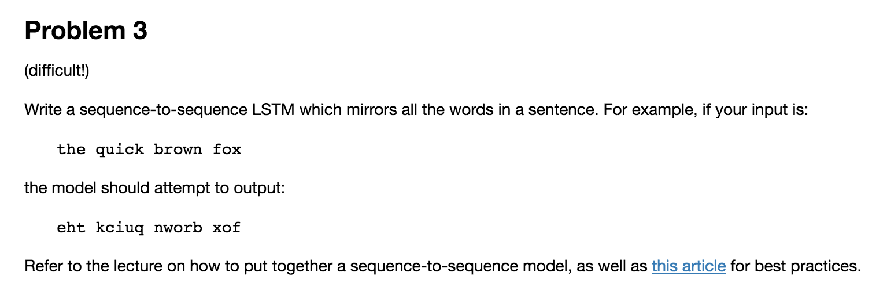
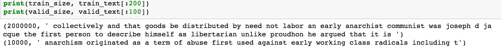
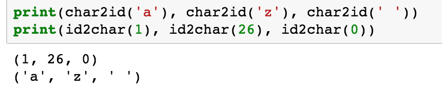
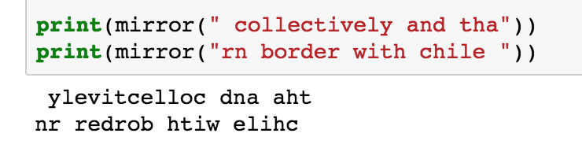
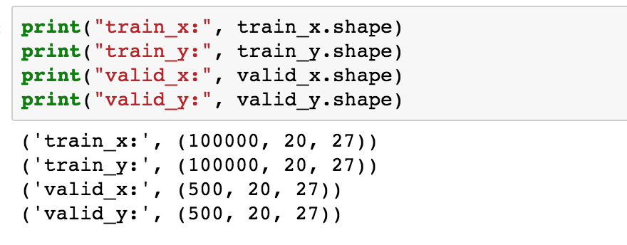

起源 最近在做Web安全技术的大作业，大作业是做密码分析的东西，一个密码可以理解为一个序列，可以使用NLP的方法。
在大作业中，有个任务要做中文分析，比如出现了哪个中文字。比如，密码中可能存在“woainixxxx”这样的形式，如何里面的中文拼音分开，这里想到了Seq2Seq模型，训练数据可以是“woaini”，然后输出为“wo ai ni”，让神经网络帮我们加上空格。
任务 这里先想到了之前学Udacity的ud730的LSTM时候留的作业，之前一直没有做。感觉这是一个很好例子，不过有点儿难，暂时没去用TensorFlow来原生实现，这里将使用Keras来做。

这里的任务是单词镜像，其实就是把单词反转一下。
代码 代码以jupyter notebook形式放在了https://github.com/nladuo/ml-study-stuff/blob/master/udacity-deep-learning/mirror_the_words.ipynb
构建数据集 取数据 接下来，先构建数据集，这里使用了之前的text8。text8里面一共有1亿个字符，这里只是做个demo，数据取少一点儿，我取了1万个字符作为测试数据，200万字符作为训练数据。
1 2 3 4 5 valid_size = 10000 train_size = 2000000 valid_text = text[:valid_size] train_text = text[valid_size:valid_size+train_size] train_size = len (train_text)

字符数字转换 在神经网络中，取值都是数值型的，只有小写字符和空格两种，也是就是26+1中字符。
1 2 3 4 5 6 7 8 9 10 11 12 13 14 15 16 17 18 19 20 import stringvocabulary_size = len (string.ascii_lowercase) + 1 first_letter = ord (string.ascii_lowercase[0 ]) def char2id (char ): if char in string.ascii_lowercase: return ord (char) - first_letter + 1 elif char == ' ' : return 0 else : print ('Unexpected character: %s' % char) return 0 def id2char (dictid ): if dictid > 0 : return chr (dictid + first_letter - 1 ) else : return ' '

构建Label 我们要做单词镜像，这在代码中很好实现。镜像后的text也就是训练的标签。
1 2 3 4 5 6 def mirror (text ): words = text.split(" " ) mirror = [] for word in words: mirror.append(word[::-1 ]) return " " .join(mirror)

构建dataset和labels 下面，我们把text拆开，20个为一组，作为dataset；把20个字符取一个mirror，就成了labels
1 2 3 4 5 6 7 8 9 10 11 12 13 14 15 seq_len = 20 def build_dataset (text ): dataset = [] labels = [] length = len (text) / seq_len for i in range (length): line = text[i:i+seq_len] mirror_line = mirror(line) dataset.append([char2id(ch) for ch in line]) labels.append([char2id(ch) for ch in mirror_line]) return dataset, labels train_set, train_labels = build_dataset(train_text) valid_set, valid_labels = build_dataset(valid_text)
然后，进行One-Hot编码，比如：如果数据有三类，0编码成[0 0 1], 1编码成[0 1 0]，2编码成[1 0 0]。这里一共有27种字符，所以是一个长度为27的向量。
1 2 3 4 5 6 7 8 9 10 11 12 13 14 15 16 17 18 19 import numpy as npdef vectorize (word, seq_len, vec_size ): vec = np.zeros((seq_len, vec_size), dtype=int ) for i, ch in enumerate (word): vec[i, ch] = 1 return vec def vectorize_dataset (dataset, labels ): x = np.zeros((len (dataset), seq_len, vocabulary_size), dtype=np.int8) y = np.zeros((len (dataset), seq_len, vocabulary_size), dtype=np.int8) for i in range (len (dataset)): x[i] = vectorize(dataset[i], seq_len, vocabulary_size) y[i] = vectorize(labels[i], seq_len, vocabulary_size) return x, y train_x, train_y = vectorize_dataset(train_set, train_labels) valid_x, valid_y = vectorize_dataset(valid_set, valid_labels)

到这里，数据集就构建好了。
训练与测试 构建模型 这里要建立seq2seq网络模型了，这里参考了这篇文章:使用 Keras 实现简单的 Sequence to Sequence 模型
模型里有个RNN，第一个RNN作为Encoder，然后把第一层的输出复制20份(数据的长度)，然后作为第二个RNN(Decoder)，最后得到一个序列的输出。
1 2 3 4 5 6 7 8 9 10 11 12 13 14 15 16 17 from keras.layers.recurrent import GRUfrom keras.layers.wrappers import TimeDistributedfrom keras.models import Sequential, model_from_jsonfrom keras.layers.core import Dense, RepeatVectordef build_model (input_size, seq_len, hidden_size ): model = Sequential() model.add(GRU(input_shape=(None , input_size), units=hidden_size, return_sequences=False )) model.add(Dense(hidden_size, activation="relu" )) model.add(RepeatVector(seq_len)) model.add(GRU(units=hidden_size, return_sequences=True )) model.add(TimeDistributed(Dense(units=input_size, activation="linear" ))) model.compile (loss="mse" , optimizer='adam' ) return model model = build_model(vocabulary_size, seq_len, 128 )
训练 1 2 3 4 5 model.fit(train_x, train_y, batch_size=128, epochs=128, verbose=1, validation_data=(valid_x, valid_y))
这里使用fit就好了，然后可以看到迭代次数增加，loss降低。
效果 最后看一下效果，虽然效果不是完全正确，但是还有那么点儿意思的。
神经网络完全从0、1学习出来能做到这种效果也算是不错了。